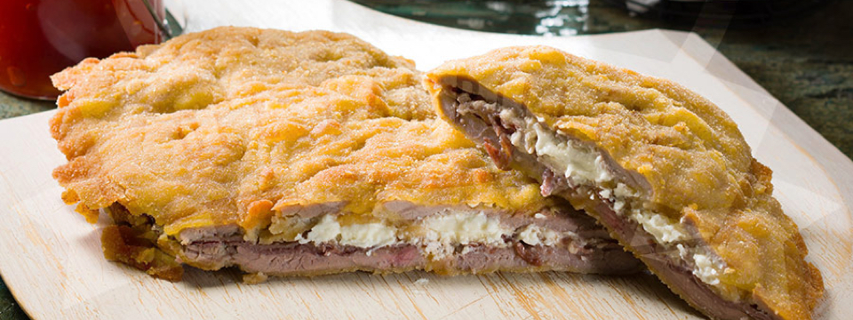

-2 filetes de ternera asturiana (120 g unidad)
-Queso de cabra (40 g)
-6 lonchas finas de cecina
-100 g harina blanca
-2 huevos camperos grandes
-200 g pan rallado
-Una pizca de sal
-Pimienta negra
-Aceite de girasol (el necesario para freír)
Elaboración
1.-En una sartén con un poco de aceite de oliva, salteamos las setas con una pizca de sal y pimienta. Preparamos los dos filetes de Ternera Asturiana con una pizca de sal y pimienta.
2.-Ponemos un filete de Ternera Asturiana, encima extendemos la mitad de la cecina (3 lonchas), incorporamos el queso de cabra, encima el resto de la cecina (3 lonchas) para terminar con otro filete de Ternera Asturiana.
3.-Presionamos bien en los laterales de los filetes para que no se salga el relleno.
4.-Batimos los huevos, cuanto mejor batamos los huevos, mejor adherido quedará el rebozado. Pasamos los filetes con mucho cuidado por la harina, después por el huevo y finalmente por el pan rallado cubriendo bien nuestro cachopo.
5.-Freímos nuestro cachopo en abundante aceite bien caliente, cuando este dorado por una parte, le damos la vuelta para que quede bien crujiente por las dos partes. Es muy importante que el aceite este limpio y sea de calidad, para que no aporte mucho sabor a nuestros cachopos y estos no absorban mucho aceite.
6.-Al sacarlo de la sartén lo pondremos sobre papel absorbente para que no nos quede aceitoso.
7.-Lo acompañaremos de unos aros de cebolla con mermelada de tomate.
